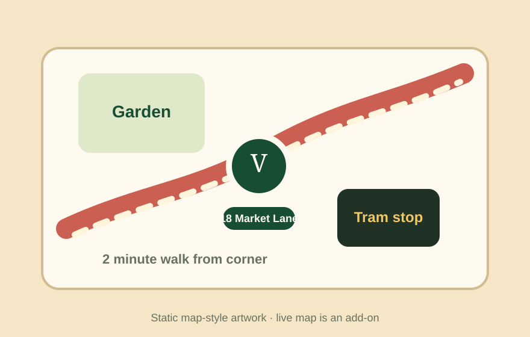

Focaccia verde
Herb focaccia, whipped ricotta, grilled greens, lemon oil.
$12Today’s board
Herb focaccia, whipped ricotta, grilled greens, lemon oil.
$12Warm white beans, tomato confit, basil crumb, soft egg.
$14Olive oil cake, citrus glaze, salted cream.
$6Counter story
Verde is written like a practical lunch club: a weekly board, a few excellent dishes, clear opening hours, a garden-table cue, and a small sourcing note. The design borrows the section logic of professional cafe sites without pretending this demo has ordering infrastructure.

Location context
Instead of a blank address, the page shows a simple map-style snapshot: garden tables, Market Lane, the tram stop, and the two-minute walk from the corner. A live Google Maps embed would be an add-on.
What to expect
Lunch is served from the counter; no delivery integration is included in this static page.
Menu copy can be edited as static content for weekly or seasonal changes.
Outdoor tables make the page feel local and visual without promising reservations.
Visit
Basic package boundary
This fictional demo is a static Basic site with one polished page, local SVG visuals, metadata, favicon, robots.txt, llms.txt, direct contact links, menu content, and responsive CSS. Add-ons may include Google Maps embed, online ordering, delivery integrations, payment, stock logic, newsletter automation, or a CMS menu editor.
Lunch note